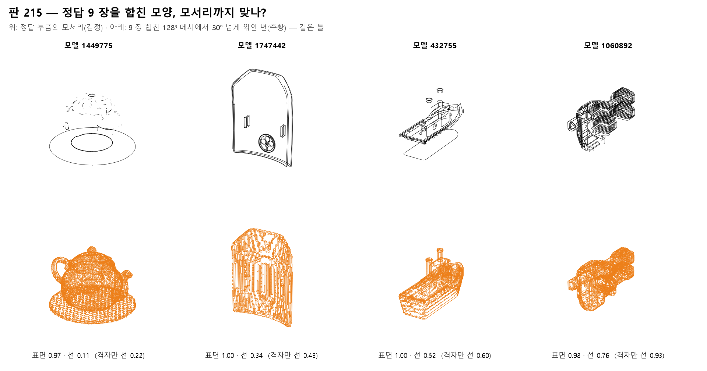

m1_tr0215_h000_모서리천장
정답 9 장(실루엣 + 깊이)을 합친 모양은 모서리까지 맞나?
판정 · 나(< 0.7) — 9 장 선F1 중앙 0.408 · 격자만 0.560 · 정밀 0.26 / 재현 0.90(20 모델) → tr216 에 대안 가설 대조(계단만 없앰 대 선으로 세움)
결정 표(돌리기 전에 정함)
- 만약 9 장 선F1(@1 %) 중앙 ≥ 0.9
다음 천장에선 점만으로 모서리가 맞음 → 출력에 선을 넣는 까닭은 「사진에서 찾기 쉬움」 쪽에서 따로 잼(합치기는 그대로) - 만약 9 장 선F1 중앙 < 0.7
다음 tr216 — 선으로 모서리를 세우는 합치기를 짓고 정답 선을 넣어 이 틈을 메우나 잼 - 만약 0.7 ~ 0.9
다음 낮은 모델을 종류별로 세어(계단 · 작은 구멍 · 얇은 판 · 곡면) 원인부터 — 정답점유 대조로 격자 탓인지 가름
분석
한 줄로
물음: tr213 에서 정답 9 장을 합친 모양은 표면 자로 0.98 이었다. 그 모양의 모서리도 맞나?
답: 아니다. 모서리 자 0.41(중앙)로, 결정 표 「나: < 0.7」 이다. 다만 진짜 모서리는 거의 다 잡혀 있고(재현 0.90), 틀린 것은 128³ 격자가 만든 가짜 꺾임(계단)이 온 표면에 깔린 것이다(정밀 0.26). 정답 점유를 격자로 바꾸기만 해도 0.56 이라, 손실의 절반 넘게가 시점이 아니라 격자 탓이다.
왜 이 판을 했나
11-17 사용자: 「모서리와 윤곽은 다르다 · 우리 데이터는 선과 data cloud 로 작업한다」 → 출력에 선(모서리 · 윤곽)을 넣을지 정하려면, 점(실루엣 + 깊이)만으로 합친 천장이 모서리를 이미 맞히는지부터 봐야 한다. 처음 세운 「정답 선을 넣으면 나아지나」 는 질 수 없는 시험이라 버리고(사용자 「이 가설을 채택한 이유는?」), 새로 지을 것 없이 자 하나로 재는 이 물음으로 바꿨다.
바꾼 것 하나
자만 바꿨다 — tr213 과 같은 합치기(9 장 · 여유 0.5 칸 · 128³)를 모서리 자 선F_5만(3D 모서리를 따라 점 5 만 · F@1 %)으로 다시 쟀다. 선F_5만 은 자 검사 통과: 바닥 1.0 · 표면을 밀면 0.98 → 0.62 → 0.23 · 필렛 1.5 % 짝 20 에서 표면 자 0.99 인데 모서리 자 0.00. (첫 자 선F_5천 은 검사 시험을 잘못 지어 무효 — 무효.yaml)
결과

| 하드서페이스 132 · 중앙(평균) | 표면 F@1 % | 모서리 F@1 % | 모서리 F@2 % |
|---|---|---|---|
| 9 장 합침 | 0.976 (0.936) | 0.408 (0.400) | 0.587 |
| 정답 점유 128³(격자만) | 0.994 (0.951) | 0.560 (0.524) | 0.706 |
| 바보: 정답 크기 상자 | 0.153 | 0.010 | 0.028 |
| 정답끼리(선 바닥) | — | 1.000 · 0.9 아래 0 모델 | — |
모서리 점수 나눠 보기(20 모델 고르게 · 중앙): 9 장 정밀 0.26 · 재현 0.90 / 정답 점유 정밀 0.42 · 재현 0.98 — 정밀 = 결과의 꺾인 선 중 진짜 모서리 1 % 안 · 재현 = 진짜 모서리 중 결과가 1 % 안에서 잡은 몫.
왜 이렇게 나왔나
확인한 것
- 모서리를 잃은 게 아니라 가짜 모서리가 생겼다 — 재현 0.90 · 정밀 0.26. 그림 아래 줄이 온통 주황인 까닭: 128³ 격자를 행진 입방체로 메시로 바꾸면 기운 면 · 곡면이 계단이 되고, 계단 하나하나가 45° · 90° 꺾임이다.
- 격자 탓이 시점 탓보다 크다: 1.0 → 0.56(정답을 격자로만) → 0.41(9 장 합침).
- 표면 자는 이걸 거의 못 본다(0.976 · 0.994) — 점과선.png 에서 본 것과 같은 일.
짐작 (아직 확인 안 함)
- 계단만 없애면(평면 · 원통 맞춤이나 다듬기) 선 없이도 모서리 점수가 크게 오를 수 있다. 그러면 「선으로 모서리를 세우기」 가 필요한 몫은 그보다 작다.
한계
- 정답 시점 · 정답 실루엣 · 정답 깊이 · 카메라를 아는 천장이다 — 사진에서 뽑은 지도가 아니다.
- 모서리 = 이웃 면 30° 넘는 꺾임 하나의 정의 · 1 % 문턱 하나.
- 정밀 · 재현 나눔은 20 모델만.
배운 것과 다음
점만으로 합친 천장은 표면은 맞지만(0.98) 모서리 자로는 0.41 — 진짜 모서리는 거의 있고, 격자 계단이 가짜 모서리를 깐다. 결정 표대로 tr216(선으로 모서리를 세우는 합치기)으로 가되, 카드에 대안 가설 대조를 넣는다:
- tr216 대안 가설 둘을 한 판에서 가름: ㄱ 선 없이 계단만 없앰(평면 · 원통 맞춤) · ㄴ 정답 선으로 면 경계를 세움 — ㄱ 이 ㄴ 만큼 오르면 출력에 선이 필요 없다.
- 격자를 올리는 쪽(256³)은 정답 점유 대조로 몫만 잼.
판 기록
- 카드 · 코드 커밋 a522397(돌리기 전) · 자 검사 하네스/자검사/선F_5만.json · 코드 원화3d/실험_20261013/캐드부품/선천장215.py
- 모델별 out/설명/캐드부품/모델215/잼_모델별.json(git 밖) · 요약 잼.json · 그림 그림.png